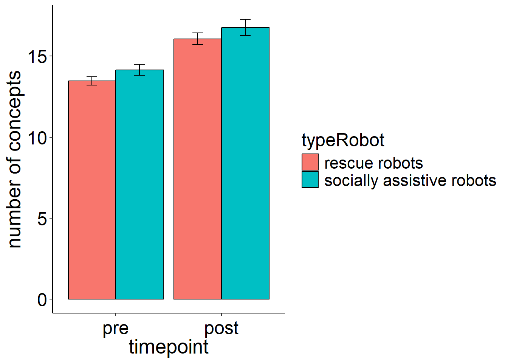
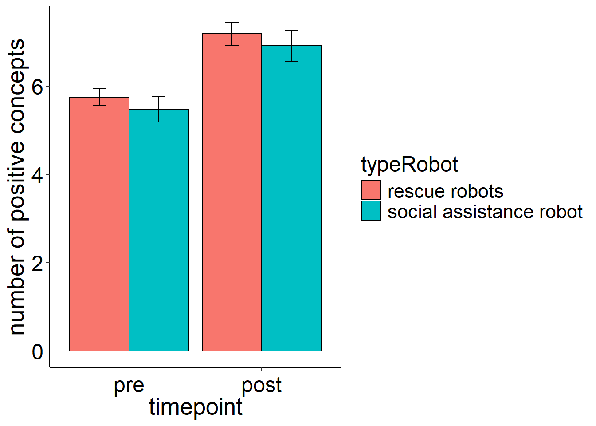
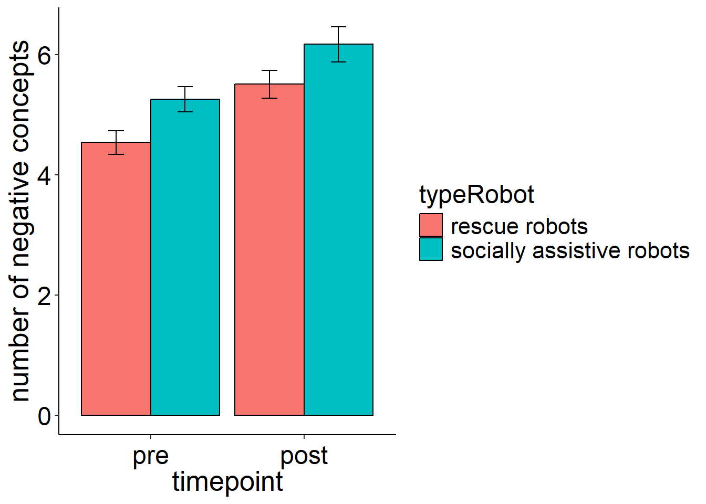
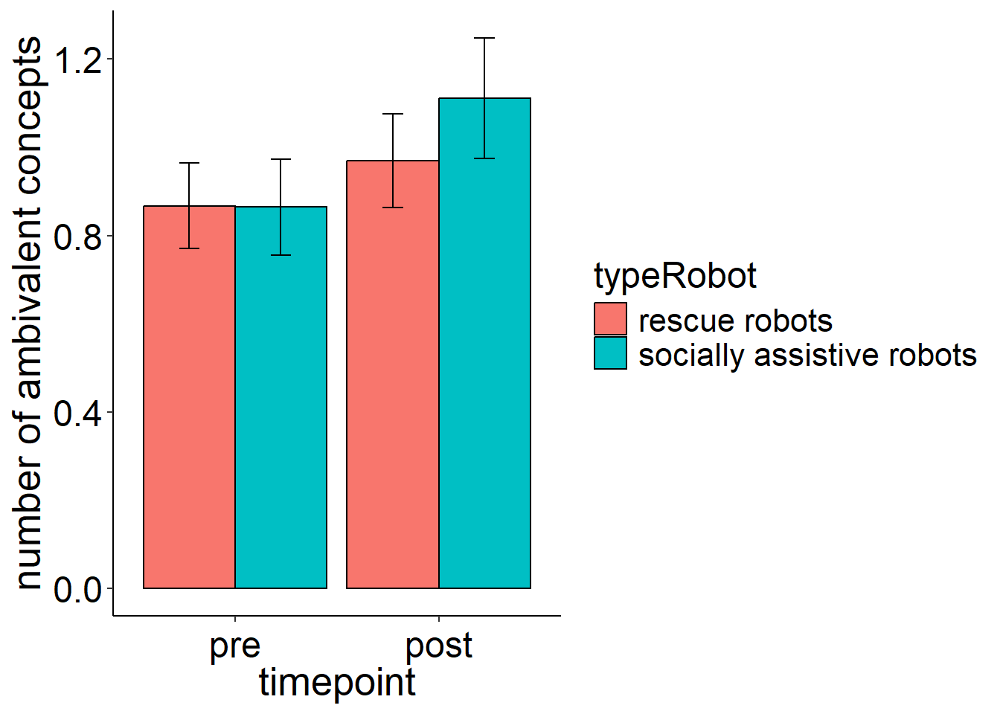

# sets the directory of location of this script as the current directory
# setwd(dirname(rstudioapi::getSourceEditorContext()$path))
### load packages
require(pacman)
p_load('tidyverse', 'jsonlite', 'magrittr', 'xlsx',
'stargazer', 'psych', 'jtools', 'DT', 'ggstatsplot',
'lavaan',
'regsem', 'MplusAutomation', 'igraph', 'openxlsx')
setwd("outputs/01_dataPreperation/final")
### load questionnaire
questionnaire <- readRDS(file = "questionnaire_final.rds")
questionnaireCAMs <- readRDS(file = "questionnaireCAMs_final.rds")
### add type robot
questionnaire$choosen_Robot <- ifelse(test = questionnaire$choosen_Robot == "Rettungsroboter", yes = "rescue robot", no = "socially assistive robot")
questionnaireCAMs$choosen_Robot <- ifelse(test = questionnaireCAMs$choosen_Robot == "Rettungsroboter", yes = "rescue robot", no = "socially assistive robot")
networkIndicators_pre <- readRDS(file = "networkIndicators_pre_final.rds")
networkIndicators_post <- readRDS(file = "networkIndicators_post_final.rds")
# CAMfiles_combined <- readRDS(file = "CAMfiles_combined_final.rds")
CAMfiles_combined <- readRDS(file = "CAMfiles_combined_final_translated.rds")
CAMfiles_pre <- readRDS(file = "CAMfiles_pre_final.rds")
CAMfiles_post <- readRDS(file = "CAMfiles_post_final.rds")
### load functions
# print(getwd())
setwd("../../../../functions")
for(i in 1:length(dir())){
# print(dir()[i])
source(dir()[i], encoding = "utf-8")
}
setwd("../functions_CAMapp")
for(i in 1:length(dir())){
# print(dir()[i])
source(dir()[i], encoding = "utf-8")
}
rm(i)
### summary function
data_summary <- function(data, varname, groupnames){
require(plyr)
summary_func <- function(x, col){
c(mean = mean(x[[col]], na.rm=TRUE),
se = sd(x[[col]], na.rm=TRUE) / sqrt(length(x[[col]])))
}
data_sum<-ddply(data, groupnames, .fun=summary_func,
varname)
data_sum <- plyr::rename(data_sum, c("mean" = varname))
return(data_sum)
}Data analyses for S2 research questions
Notes
load cleaned data files
descriptives
table(questionnaireCAMs$typeChange)
A B C D
1 143 36 36 data preperation
only keep B, D
only keep B, D:
tmp_ids <- questionnaireCAMs$PROLIFIC_PID[questionnaireCAMs$typeChange %in% c("B", "D")]
networkIndicators_pre <- networkIndicators_pre[str_remove_all(string = networkIndicators_pre$participantCAM, pattern = "_pre$") %in% tmp_ids, ]
networkIndicators_post <- networkIndicators_post[str_remove_all(string = networkIndicators_post$participantCAM, pattern = "_post$") %in% tmp_ids, ]
questionnaire <- questionnaire[questionnaire$PROLIFIC_PID %in% tmp_ids, ]
questionnaireCAMs <- questionnaireCAMs[questionnaireCAMs$PROLIFIC_PID %in% tmp_ids, ]
CAMfiles_combined[[1]] <- CAMfiles_combined[[1]][CAMfiles_combined[[1]]$participantCAM %in% tmp_ids, ]
CAMfiles_combined[[2]] <- CAMfiles_combined[[2]][CAMfiles_combined[[2]]$participantCAM %in% tmp_ids, ]
CAMfiles_combined[[3]] <- CAMfiles_combined[[3]][CAMfiles_combined[[3]]$participantCAM.y %in% tmp_ids, ] add IDs to CAMfiles_combined
CAMfiles_combined[[1]]$participantCAM[CAMfiles_combined[[1]]$CAM %in% CAMfiles_pre[[1]]$CAM] <- paste0(CAMfiles_combined[[1]]$participantCAM[CAMfiles_combined[[1]]$CAM %in% CAMfiles_pre[[1]]$CAM], "_pre")
CAMfiles_combined[[1]]$participantCAM[CAMfiles_combined[[1]]$CAM %in% CAMfiles_post[[1]]$CAM] <- paste0(CAMfiles_combined[[1]]$participantCAM[CAMfiles_combined[[1]]$CAM %in% CAMfiles_post[[1]]$CAM], "_post")set up long data
# prepare data
### add pre post
networkIndicators_pre$timepoint <- "pre"
networkIndicators_post$timepoint <- "post"
### long data format
networkIndicators_long <- rbind(networkIndicators_pre, networkIndicators_post)
### ad ID
networkIndicators_long$ID <- c(1:(nrow(networkIndicators_long) / 2), 1:(nrow(networkIndicators_long) / 2))
### reformat variable
networkIndicators_long$timepoint <- factor(networkIndicators_long$timepoint,
levels = c("pre", "post"),
ordered = FALSE)
### add type robot
networkIndicators_long$typeRobot <- ifelse(test = !is.na(networkIndicators_long$valence_micro_Rettungsroboter), yes = "rescue robots", no = "socially assistive robots")
table(networkIndicators_long$typeRobot)
rescue robots socially assistive robots
196 162 table(questionnaireCAMs$choosen_Robot) * 2
rescue robot socially assistive robot
196 162 R1: Perceived risks and benefits quantitative
average emotional evaluation
### post - pre difference of robot -> average valence
fit1 <- afex::aov_car(mean_valence_macro ~ timepoint*typeRobot + Error(ID / timepoint),
data = networkIndicators_long)Converting to factor: typeRobotContrasts set to contr.sum for the following variables: typeRobotfit1a <- afex::aov_ez(id = "ID", dv = "mean_valence_macro",
data = networkIndicators_long, between=c("typeRobot"), within=c("timepoint"))Converting to factor: typeRobot
Contrasts set to contr.sum for the following variables: typeRobot# partical eta squared
anova(fit1, es = "pes")Anova Table (Type 3 tests)
Response: mean_valence_macro
num Df den Df MSE F pes Pr(>F)
typeRobot 1 177 0.38914 15.0344 0.078290 0.0001486 ***
timepoint 1 177 0.02291 15.2898 0.079514 0.0001312 ***
typeRobot:timepoint 1 177 0.02291 1.1923 0.006691 0.2763455
---
Signif. codes: 0 '***' 0.001 '**' 0.01 '*' 0.05 '.' 0.1 ' ' 1# generalized eta squared
fit1a # > identical resultsAnova Table (Type 3 tests)
Response: mean_valence_macro
Effect df MSE F ges p.value
1 typeRobot 1, 177 0.39 15.03 *** .074 <.001
2 timepoint 1, 177 0.02 15.29 *** .005 <.001
3 typeRobot:timepoint 1, 177 0.02 1.19 <.001 .276
---
Signif. codes: 0 '***' 0.001 '**' 0.01 '*' 0.05 '+' 0.1 ' ' 1dfvalcor <- data_summary(networkIndicators_long, varname="mean_valence_macro",
groupnames=c("timepoint","typeRobot"))Lade nötiges Paket: plyrWarning: Paket 'plyr' wurde unter R Version 4.3.2 erstellt------------------------------------------------------------------------------You have loaded plyr after dplyr - this is likely to cause problems.
If you need functions from both plyr and dplyr, please load plyr first, then dplyr:
library(plyr); library(dplyr)------------------------------------------------------------------------------
Attache Paket: 'plyr'Die folgenden Objekte sind maskiert von 'package:dplyr':
arrange, count, desc, failwith, id, mutate, rename, summarise,
summarizeDas folgende Objekt ist maskiert 'package:purrr':
compactdfvalcor$timepoint <- factor(dfvalcor$timepoint, levels = c("pre", "post"))
p <- ggplot(dfvalcor, aes(x=timepoint, y=mean_valence_macro, fill=typeRobot)) +
geom_bar(stat="identity", color="black",
position=position_dodge()) +
geom_errorbar(aes(ymin=mean_valence_macro-se, ymax=mean_valence_macro+se), width=.2,
position=position_dodge(.9)) + ggplot_theme + ylab(label = "average emotional evaluation") +
theme(axis.title.x = element_text(size=20), axis.title.y = element_text(size=20), axis.text.x = element_text(size = 18), axis.text.y = element_text(size = 18), legend.text = element_text(size=16), legend.title = element_text(size=18))
print(p)
number of drawn concepts
overall
### post - pre difference of robot -> number of concepts
fit1 <- afex::aov_car(num_nodes_macro ~ timepoint*typeRobot + Error(ID / timepoint),
data = networkIndicators_long)Converting to factor: typeRobotContrasts set to contr.sum for the following variables: typeRobotfit1a <- afex::aov_ez(id = "ID", dv = "num_nodes_macro",
data = networkIndicators_long, between=c("typeRobot"), within=c("timepoint"))Converting to factor: typeRobot
Contrasts set to contr.sum for the following variables: typeRobot# partical eta squared
anova(fit1, es = "pes")Anova Table (Type 3 tests)
Response: num_nodes_macro
num Df den Df MSE F pes Pr(>F)
typeRobot 1 177 21.7252 1.9233 0.01075 0.1672
timepoint 1 177 2.4198 249.6170 0.58511 <2e-16 ***
typeRobot:timepoint 1 177 2.4198 0.0021 0.00001 0.9632
---
Signif. codes: 0 '***' 0.001 '**' 0.01 '*' 0.05 '.' 0.1 ' ' 1# generalized eta squared
fit1a # > identical resultsAnova Table (Type 3 tests)
Response: num_nodes_macro
Effect df MSE F ges p.value
1 typeRobot 1, 177 21.73 1.92 .010 .167
2 timepoint 1, 177 2.42 249.62 *** .124 <.001
3 typeRobot:timepoint 1, 177 2.42 0.00 <.001 .963
---
Signif. codes: 0 '***' 0.001 '**' 0.01 '*' 0.05 '+' 0.1 ' ' 1dfvalcor <- data_summary(networkIndicators_long, varname="num_nodes_macro",
groupnames=c("timepoint","typeRobot"))
dfvalcor$timepoint <- factor(dfvalcor$timepoint, levels = c("pre", "post"))
p <- ggplot(dfvalcor, aes(x=timepoint, y=num_nodes_macro, fill=typeRobot)) +
geom_bar(stat="identity", color="black",
position=position_dodge()) +
geom_errorbar(aes(ymin=num_nodes_macro-se, ymax=num_nodes_macro+se), width=.2,
position=position_dodge(.9)) + ggplot_theme + ylab(label = "number of concepts") +
theme(axis.title.x = element_text(size=20), axis.title.y = element_text(size=20), axis.text.x = element_text(size = 18), axis.text.y = element_text(size = 18), legend.text = element_text(size=16), legend.title = element_text(size=18))
print(p)
positive
### post - pre difference of robot -> number of concepts
fit1 <- afex::aov_car(num_nodes_pos_macro ~ timepoint*typeRobot + Error(ID / timepoint),
data = networkIndicators_long)Converting to factor: typeRobotContrasts set to contr.sum for the following variables: typeRobotfit1a <- afex::aov_ez(id = "ID", dv = "num_nodes_pos_macro",
data = networkIndicators_long, between=c("typeRobot"), within=c("timepoint"))Converting to factor: typeRobot
Contrasts set to contr.sum for the following variables: typeRobot# partical eta squared
anova(fit1, es = "pes")Anova Table (Type 3 tests)
Response: num_nodes_pos_macro
num Df den Df MSE F pes Pr(>F)
typeRobot 1 177 12.4276 0.4806 0.00271 0.4890
timepoint 1 177 0.9155 201.6297 0.53252 <2e-16 ***
typeRobot:timepoint 1 177 0.9155 0.0193 0.00011 0.8897
---
Signif. codes: 0 '***' 0.001 '**' 0.01 '*' 0.05 '.' 0.1 ' ' 1# generalized eta squared
fit1a # > identical resultsAnova Table (Type 3 tests)
Response: num_nodes_pos_macro
Effect df MSE F ges p.value
1 typeRobot 1, 177 12.43 0.48 .003 .489
2 timepoint 1, 177 0.92 201.63 *** .072 <.001
3 typeRobot:timepoint 1, 177 0.92 0.02 <.001 .890
---
Signif. codes: 0 '***' 0.001 '**' 0.01 '*' 0.05 '+' 0.1 ' ' 1dfvalcor <- data_summary(networkIndicators_long, varname="num_nodes_pos_macro",
groupnames=c("timepoint","typeRobot"))
dfvalcor$timepoint <- factor(dfvalcor$timepoint, levels = c("pre", "post"))
p <- ggplot(dfvalcor, aes(x=timepoint, y=num_nodes_pos_macro, fill=typeRobot)) +
geom_bar(stat="identity", color="black",
position=position_dodge()) +
geom_errorbar(aes(ymin=num_nodes_pos_macro-se, ymax=num_nodes_pos_macro+se), width=.2,
position=position_dodge(.9)) + ggplot_theme + ylab(label = "number of positive concepts") +
theme(axis.title.x = element_text(size=20), axis.title.y = element_text(size=20), axis.text.x = element_text(size = 18), axis.text.y = element_text(size = 18), legend.text = element_text(size=16), legend.title = element_text(size=18))
print(p)
negative
### post - pre difference of robot -> number of concepts
fit1 <- afex::aov_car(num_nodes_neg_macro ~ timepoint*typeRobot + Error(ID / timepoint),
data = networkIndicators_long)Converting to factor: typeRobotContrasts set to contr.sum for the following variables: typeRobotfit1a <- afex::aov_ez(id = "ID", dv = "num_nodes_neg_macro",
data = networkIndicators_long, between=c("typeRobot"), within=c("timepoint"))Converting to factor: typeRobot
Contrasts set to contr.sum for the following variables: typeRobot# partical eta squared
anova(fit1, es = "pes")Anova Table (Type 3 tests)
Response: num_nodes_neg_macro
num Df den Df MSE F pes Pr(>F)
typeRobot 1 177 8.7645 4.8255 0.02654 0.02934 *
timepoint 1 177 0.8737 89.9773 0.33702 < 2e-16 ***
typeRobot:timepoint 1 177 0.8737 0.0790 0.00045 0.77893
---
Signif. codes: 0 '***' 0.001 '**' 0.01 '*' 0.05 '.' 0.1 ' ' 1# generalized eta squared
fit1a # > identical resultsAnova Table (Type 3 tests)
Response: num_nodes_neg_macro
Effect df MSE F ges p.value
1 typeRobot 1, 177 8.76 4.83 * .024 .029
2 timepoint 1, 177 0.87 89.98 *** .044 <.001
3 typeRobot:timepoint 1, 177 0.87 0.08 <.001 .779
---
Signif. codes: 0 '***' 0.001 '**' 0.01 '*' 0.05 '+' 0.1 ' ' 1dfvalcor <- data_summary(networkIndicators_long, varname="num_nodes_neg_macro",
groupnames=c("timepoint","typeRobot"))
dfvalcor$timepoint <- factor(dfvalcor$timepoint, levels = c("pre", "post"))
p <- ggplot(dfvalcor, aes(x=timepoint, y=num_nodes_neg_macro, fill=typeRobot)) +
geom_bar(stat="identity", color="black",
position=position_dodge()) +
geom_errorbar(aes(ymin=num_nodes_neg_macro-se, ymax=num_nodes_neg_macro+se), width=.2,
position=position_dodge(.9)) + ggplot_theme + ylab(label = "number of negative concepts") +
theme(axis.title.x = element_text(size=20), axis.title.y = element_text(size=20), axis.text.x = element_text(size = 18), axis.text.y = element_text(size = 18), legend.text = element_text(size=16), legend.title = element_text(size=18))
print(p)
ambivalent
### post - pre difference of robot -> number of concepts
fit1 <- afex::aov_car(num_nodes_ambi_macro ~ timepoint*typeRobot + Error(ID / timepoint),
data = networkIndicators_long)Converting to factor: typeRobotContrasts set to contr.sum for the following variables: typeRobotfit1a <- afex::aov_ez(id = "ID", dv = "num_nodes_ambi_macro",
data = networkIndicators_long, between=c("typeRobot"), within=c("timepoint"))Converting to factor: typeRobot
Contrasts set to contr.sum for the following variables: typeRobot# partical eta squared
anova(fit1, es = "pes")Anova Table (Type 3 tests)
Response: num_nodes_ambi_macro
num Df den Df MSE F pes Pr(>F)
typeRobot 1 177 2.04898 0.2078 0.001173 0.649053
timepoint 1 177 0.17526 15.4059 0.080070 0.000124 ***
typeRobot:timepoint 1 177 0.17526 2.6554 0.014780 0.104980
---
Signif. codes: 0 '***' 0.001 '**' 0.01 '*' 0.05 '.' 0.1 ' ' 1# generalized eta squared
fit1a # > identical resultsAnova Table (Type 3 tests)
Response: num_nodes_ambi_macro
Effect df MSE F ges p.value
1 typeRobot 1, 177 2.05 0.21 .001 .649
2 timepoint 1, 177 0.18 15.41 *** .007 <.001
3 typeRobot:timepoint 1, 177 0.18 2.66 .001 .105
---
Signif. codes: 0 '***' 0.001 '**' 0.01 '*' 0.05 '+' 0.1 ' ' 1dfvalcor <- data_summary(networkIndicators_long, varname="num_nodes_ambi_macro",
groupnames=c("timepoint","typeRobot"))
dfvalcor$timepoint <- factor(dfvalcor$timepoint, levels = c("pre", "post"))
p <- ggplot(dfvalcor, aes(x=timepoint, y=num_nodes_ambi_macro, fill=typeRobot)) +
geom_bar(stat="identity", color="black",
position=position_dodge()) +
geom_errorbar(aes(ymin=num_nodes_ambi_macro-se, ymax=num_nodes_ambi_macro+se), width=.2,
position=position_dodge(.9)) + ggplot_theme + ylab(label = "number of ambivalent concepts") +
theme(axis.title.x = element_text(size=20), axis.title.y = element_text(size=20), axis.text.x = element_text(size = 18), axis.text.y = element_text(size = 18), legend.text = element_text(size=16), legend.title = element_text(size=18))
print(p)
R2: Perceived risks and benefits qualitative
overall perspective
ids_participants <- str_remove_all(string = CAMfiles_combined[[1]]$participantCAM, pattern = "_pre$|_post$")
ids_participants <- unique(ids_participants)
## number of participants
length(ids_participants)[1] 179## get dummy variable for pre / post
CAMfiles_combined[[1]]$timepoint <- str_extract_all(string = CAMfiles_combined[[1]]$participantCAM, pattern = "pre$|post$", simplify = TRUE)
# reformat variable
CAMfiles_combined[[1]]$timepoint <- factor(CAMfiles_combined[[1]]$timepoint,
levels = c("pre", "post"),
ordered = FALSE)
## get dummy variable for pre / post
CAMfiles_combined[[1]]$category <- str_remove_all(string = CAMfiles_combined[[1]]$text_summarized, pattern = "_positive$|_negative$|_ambivalent$|_neutral$")
ids_categories <- CAMfiles_combined[[1]]$category
ids_categories <- unique(ids_categories)
ids_categories <- ids_categories[!ids_categories %in% c("Soziale Assistenzroboter", "Rettungsroboter", "Nachteile", "Vorteile")]
## number of categories
length(ids_categories)[1] 18table(CAMfiles_combined[[1]]$category)
AN AP HC
140 90 153
HRIN HRIP LC
204 180 83
MT Nachteile R
393 358 202
RCA RCN RCPN
175 214 145
RCPP Rettungsroboter SA
204 196 547
SIN SIP Soziale Assistenzroboter
335 346 162
T TL TP
187 229 498
Vorteile
358 table(CAMfiles_combined[[1]]$timepoint)
pre post
2466 2933 prepare data
allConcepts_pre <- CAMfiles_combined[[1]][str_detect(string = CAMfiles_combined[[1]]$participantCAM, pattern = "_pre$"), ]
allConcepts_post <- CAMfiles_combined[[1]][str_detect(string = CAMfiles_combined[[1]]$participantCAM, pattern = "_post$"), ]split by category
not sensitive if concept was deleted!
table(CAMfiles_combined[[1]]$category, CAMfiles_combined[[1]]$timepoint)
pre post
AN 62 78
AP 33 57
HC 75 78
HRIN 88 116
HRIP 78 102
LC 40 43
MT 187 206
Nachteile 179 179
R 76 126
RCA 82 93
RCN 91 123
RCPN 62 83
RCPP 76 128
Rettungsroboter 98 98
SA 244 303
SIN 162 173
SIP 167 179
Soziale Assistenzroboter 81 81
T 89 98
TL 101 128
TP 216 282
Vorteile 179 179split by category and individual
create lists
## create lists
list_text_constant <- list()
list_text_old <- list()
list_text_new <- list()
for (c in ids_categories) {
list_text_constant[[c]] <- list()
list_text_old[[c]] <- list()
list_text_new[[c]] <- list()
for (i in 1:length(ids_participants)) {
list_text_constant[[c]][[i]] <- NA
list_text_old[[c]][[i]] <- NA
list_text_new[[c]][[i]] <- NA
}
names(list_text_constant[[c]]) <- ids_participants
names(list_text_old[[c]]) <- ids_participants
names(list_text_new[[c]]) <- ids_participants
}
for (i in 1:length(ids_participants)) {
tmp_pre <-
CAMfiles_combined[[1]][CAMfiles_combined[[1]]$participantCAM %in% paste0(ids_participants[i], "_pre"), ]
tmp_post <-
CAMfiles_combined[[1]][CAMfiles_combined[[1]]$participantCAM %in% paste0(ids_participants[i], "_post"), ]
for (c in 1:length(ids_categories)) {
if (any(
c(
tmp_pre$category %in% ids_categories[c],
tmp_post$category %in% ids_categories[c]
)
)) {
## manually check if you miss any words
if (length(table(tmp_pre$text[tmp_pre$category %in% ids_categories[c]])[table(tmp_pre$text[tmp_pre$category %in% ids_categories[c]]) >= 2]) >= 1) {
cat("i post:", i, "in c:", c, "\n")
}
if (length(table(tmp_post$text[tmp_post$category %in% ids_categories[c]])[table(tmp_post$text[tmp_post$category %in% ids_categories[c]]) >= 2]) >= 1) {
cat("i post:", i, "in c:", c, "\n")
}
text_vec_pre <-
tmp_pre$text[tmp_pre$category %in% ids_categories[c]]
text_vec_post <-
tmp_post$text[tmp_post$category %in% ids_categories[c]]
## constant
if (length(text_vec_pre[text_vec_pre %in% text_vec_post]) >= 1) {
list_text_constant[[ids_categories[c]]][[i]] <-
text_vec_pre[text_vec_pre %in% text_vec_post]
}
## old and deleted
if (length(text_vec_pre[!text_vec_pre %in% text_vec_post]) >= 1) {
list_text_old[[ids_categories[c]]][[i]] <-
text_vec_pre[!text_vec_pre %in% text_vec_post]
}
## new
if (length(text_vec_post[!text_vec_post %in% text_vec_pre]) >= 1) {
list_text_new[[ids_categories[c]]][[i]] <-
text_vec_post[!text_vec_post %in% text_vec_pre]
}
}
}
}i post: 1 in c: 18
i post: 30 in c: 10
i post: 33 in c: 10
i post: 33 in c: 12
i post: 33 in c: 12
i post: 124 in c: 8 describe lists
overall:
length(unlist(list_text_constant)[!is.na(unlist(list_text_constant))])[1] 1865length(unlist(list_text_old)[!is.na(unlist(list_text_old))])[1] 64length(unlist(list_text_new)[!is.na(unlist(list_text_new))])[1] 530get descriptive tables for each type of robot
separately for categories:
getDescriptiveTable <- function(chooseRobot){
dat <- data.frame(category = ids_categories, CAMs = NA,
Nconstant = NA, Nold = NA, Nnew = NA,
Mconstant = NA, Mold = NA, Mnew = NA)
for (c in 1:length(ids_categories)) {
tmp_constant <- list_text_constant[[ids_categories[c]]]
tmp_constant <- tmp_constant[!is.na(tmp_constant)]
tmp_old <- list_text_old[[ids_categories[c]]]
tmp_old <- tmp_old[!is.na(tmp_old)]
tmp_new <- list_text_new[[ids_categories[c]]]
tmp_new <- tmp_new[!is.na(tmp_new)]
tmp_constant <- tmp_constant[names(tmp_constant) %in% questionnaire$PROLIFIC_PID[questionnaire$choosen_Robot == chooseRobot]]
tmp_old <- tmp_old[names(tmp_old) %in% questionnaire$PROLIFIC_PID[questionnaire$choosen_Robot == chooseRobot]]
tmp_new <- tmp_new[names(tmp_new) %in% questionnaire$PROLIFIC_PID[questionnaire$choosen_Robot == chooseRobot]]
dat[c,]$CAMs <- length(unique(c(names(tmp_constant), names(tmp_old), names(tmp_new))))
dat[c,]$Nconstant <- length(unlist(tmp_constant))
dat[c,]$Nold <- length(unlist(tmp_old))
dat[c,]$Nnew <- length(unlist(tmp_new))
vec_constant_valence <- list()
for(j in 1:length(tmp_constant)){
# cat("get error:", c, j,"\n")
vec_constant_valence[[j]] <- CAMfiles_combined[[1]]$value[str_remove_all(string = CAMfiles_combined[[1]]$participantCAM, pattern = "_pre$|_post$") %in% names(tmp_constant)[j] & CAMfiles_combined[[1]]$text %in% tmp_constant[[j]]]
if(any(CAMfiles_combined[[1]]$value[CAMfiles_combined[[1]]$participantCAM %in% paste0(names(tmp_constant)[j], "_pre") & CAMfiles_combined[[1]]$text %in% tmp_constant[[j]]] != CAMfiles_combined[[1]]$value[CAMfiles_combined[[1]]$participantCAM %in% paste0(names(tmp_constant)[j], "_post") & CAMfiles_combined[[1]]$text %in% tmp_constant[[j]]])){
cat("changed valence of constant words in category", ids_categories[c], "person with id", names(tmp_constant)[j],"\n")
}
}
tmp <- ifelse(test = unlist(vec_constant_valence) == 10, yes = 0, no = unlist(vec_constant_valence))
dat[c,]$Mconstant <- paste0(round(x = mean(tmp), digits = 2), " (", round(x = sd(tmp), digits = 2), ")")
if(length(tmp_old) >= 1){
vec_old_valence <- list()
for(j in 1:length(tmp_old)){
vec_old_valence[[j]] <- CAMfiles_combined[[1]]$value[str_remove_all(string = CAMfiles_combined[[1]]$participantCAM, pattern = "_pre$|_post$") %in% names(tmp_old)[j] & CAMfiles_combined[[1]]$text %in% tmp_old[[j]]]
}
tmp <- ifelse(test = unlist(vec_old_valence) == 10, yes = 0, no = unlist(vec_old_valence))
dat[c,]$Mold <- paste0(round(x = mean(tmp), digits = 2), " (", round(x = sd(tmp), digits = 2), ")")
}
vec_new_valence <- list()
for(j in 1:length(tmp_new)){
vec_new_valence[[j]] <- CAMfiles_combined[[1]]$value[str_remove_all(string = CAMfiles_combined[[1]]$participantCAM, pattern = "_pre$|_post$") %in% names(tmp_new)[j] & CAMfiles_combined[[1]]$text %in% tmp_new[[j]]]
}
tmp <- ifelse(test = unlist(vec_new_valence) == 10, yes = 0, no = unlist(vec_new_valence))
dat[c,]$Mnew <- paste0(round(x = mean(tmp), digits = 2), " (", round(x = sd(tmp), digits = 2), ")")
}
return(dat)
} ## for rescue robots
tmp_RR <- getDescriptiveTable(chooseRobot = "rescue robot")changed valence of constant words in category RCPP person with id 6503144bcc000df7879d9637
changed valence of constant words in category LC person with id 646b607e88557c2ff4f0de85
changed valence of constant words in category SIP person with id 6503144bcc000df7879d9637
changed valence of constant words in category R person with id 6554d1f1fda70c02063f51bd
changed valence of constant words in category HC person with id 60207652caa62b6a34ff96dc
changed valence of constant words in category RCN person with id 6544ea06d33e1704f993f76f
changed valence of constant words in category SA person with id 5edc8e2eaa0f2295a0fcef85
changed valence of constant words in category TP person with id 611ba1976cd48fdde1f9edd3
changed valence of constant words in category TP person with id 63eb38339e72d01818aeb71b
changed valence of constant words in category TP person with id 652fe4a08d5ecae18fc4fe31
changed valence of constant words in category TP person with id 60207652caa62b6a34ff96dc
changed valence of constant words in category TL person with id 64fdee2b969a06603ae3226d
changed valence of constant words in category TL person with id 6429682ff18d08f9eed7d9e7
changed valence of constant words in category HRIN person with id 61574c44d4bd510e680f9d7a
changed valence of constant words in category HRIN person with id 5f5494aa76d6147f7ca89533
changed valence of constant words in category MT person with id 64fdee2b969a06603ae3226d
changed valence of constant words in category MT person with id 6429682ff18d08f9eed7d9e7
changed valence of constant words in category RCA person with id 646b607e88557c2ff4f0de85
changed valence of constant words in category AP person with id 5edc8e2eaa0f2295a0fcef85 DT::datatable(data = tmp_RR)## for socially assistive robot
tmp_SAR <- getDescriptiveTable(chooseRobot = "socially assistive robot")changed valence of constant words in category T person with id 5be95af71ca46b0001862746
changed valence of constant words in category T person with id 651ec655d2ef1a3ba8e64470
changed valence of constant words in category SIP person with id 5be95af71ca46b0001862746
changed valence of constant words in category HRIP person with id 646dc14e28531e7b267adb50
changed valence of constant words in category HRIP person with id 5f738b981a302b0d6d6405aa
changed valence of constant words in category HRIP person with id 651ec655d2ef1a3ba8e64470
changed valence of constant words in category AN person with id 5da727bfc2a70a0011a128e0
changed valence of constant words in category AN person with id 63b6be975097f6e31872fc0e
changed valence of constant words in category AN person with id 651ec655d2ef1a3ba8e64470
changed valence of constant words in category SIN person with id 5da727bfc2a70a0011a128e0
changed valence of constant words in category SIN person with id 653a50254cd0995ce9fed45e
changed valence of constant words in category HC person with id 615452aaabb932ada88ef3ca
changed valence of constant words in category HC person with id 63b87d2c9edd47ad702413a1
changed valence of constant words in category RCN person with id 655b4ea3ab2c763e739cb199
changed valence of constant words in category TP person with id 655b4ea3ab2c763e739cb199
changed valence of constant words in category TP person with id 653a50254cd0995ce9fed45e
changed valence of constant words in category TP person with id 651ec655d2ef1a3ba8e64470
changed valence of constant words in category TL person with id 615452aaabb932ada88ef3ca
changed valence of constant words in category TL person with id 5da727bfc2a70a0011a128e0
changed valence of constant words in category TL person with id 651ec655d2ef1a3ba8e64470
changed valence of constant words in category HRIN person with id 5da727bfc2a70a0011a128e0
changed valence of constant words in category HRIN person with id 653a50254cd0995ce9fed45e
changed valence of constant words in category HRIN person with id 63b87d2c9edd47ad702413a1
changed valence of constant words in category MT person with id 5be454621effe60001cbf290
changed valence of constant words in category RCA person with id 5be95af71ca46b0001862746
changed valence of constant words in category RCA person with id 655b4ea3ab2c763e739cb199 DT::datatable(data = tmp_SAR)save as HTML:
setwd("outputs/03_dataAnalysis_RQ")
stargazer(tmp_RR, type = "html", out = "rescue robot_table.html", summary = FALSE)
<table style="text-align:center"><tr><td colspan="9" style="border-bottom: 1px solid black"></td></tr><tr><td style="text-align:left"></td><td>category</td><td>CAMs</td><td>Nconstant</td><td>Nold</td><td>Nnew</td><td>Mconstant</td><td>Mold</td><td>Mnew</td></tr>
<tr><td colspan="9" style="border-bottom: 1px solid black"></td></tr><tr><td style="text-align:left">1</td><td>RCPP</td><td>46</td><td>37</td><td>4</td><td>28</td><td>1.97 (0.99)</td><td>1.5 (1)</td><td>2.03 (0.85)</td></tr>
<tr><td style="text-align:left">2</td><td>LC</td><td>9</td><td>10</td><td>0</td><td>1</td><td>1.05 (0.6)</td><td></td><td>0 (1.41)</td></tr>
<tr><td style="text-align:left">3</td><td>T</td><td>38</td><td>41</td><td>0</td><td>6</td><td>2 (1.18)</td><td></td><td>1.29 (1.38)</td></tr>
<tr><td style="text-align:left">4</td><td>SIP</td><td>34</td><td>37</td><td>1</td><td>5</td><td>2.24 (0.87)</td><td>3 (NA)</td><td>2.4 (0.89)</td></tr>
<tr><td style="text-align:left">5</td><td>HRIP</td><td>9</td><td>4</td><td>0</td><td>5</td><td>2.75 (0.46)</td><td></td><td>1.8 (0.84)</td></tr>
<tr><td style="text-align:left">6</td><td>AN</td><td>26</td><td>26</td><td>1</td><td>5</td><td>-2.23 (0.98)</td><td>-2 (NA)</td><td>-1.4 (1.14)</td></tr>
<tr><td style="text-align:left">7</td><td>SIN</td><td>17</td><td>20</td><td>0</td><td>1</td><td>-1.75 (0.9)</td><td></td><td>-1 (NA)</td></tr>
<tr><td style="text-align:left">8</td><td>R</td><td>61</td><td>57</td><td>1</td><td>42</td><td>-2.15 (0.99)</td><td>-3 (NA)</td><td>-1.58 (0.85)</td></tr>
<tr><td style="text-align:left">9</td><td>HC</td><td>42</td><td>42</td><td>2</td><td>4</td><td>-1.58 (0.75)</td><td>-0.33 (1.15)</td><td>-1 (0.82)</td></tr>
<tr><td style="text-align:left">10</td><td>RCN</td><td>36</td><td>43</td><td>3</td><td>22</td><td>-0.14 (0.58)</td><td>0 (0)</td><td>-0.27 (0.7)</td></tr>
<tr><td style="text-align:left">11</td><td>SA</td><td>93</td><td>222</td><td>5</td><td>40</td><td>2.34 (0.81)</td><td>2.2 (0.84)</td><td>2.3 (0.99)</td></tr>
<tr><td style="text-align:left">12</td><td>TP</td><td>86</td><td>136</td><td>3</td><td>63</td><td>2.18 (0.9)</td><td>2 (1)</td><td>2.2 (1.09)</td></tr>
<tr><td style="text-align:left">13</td><td>TL</td><td>63</td><td>68</td><td>3</td><td>29</td><td>-1.85 (0.94)</td><td>-1 (1.41)</td><td>-1.69 (1.04)</td></tr>
<tr><td style="text-align:left">14</td><td>RCPN</td><td>37</td><td>28</td><td>1</td><td>12</td><td>-1.64 (0.9)</td><td>-1 (NA)</td><td>-2.14 (0.95)</td></tr>
<tr><td style="text-align:left">15</td><td>HRIN</td><td>17</td><td>17</td><td>0</td><td>2</td><td>-2.06 (0.81)</td><td></td><td>-2 (1.41)</td></tr>
<tr><td style="text-align:left">16</td><td>MT</td><td>84</td><td>141</td><td>6</td><td>13</td><td>-2.14 (0.9)</td><td>-1.43 (1.62)</td><td>-1.77 (1.09)</td></tr>
<tr><td style="text-align:left">17</td><td>RCA</td><td>43</td><td>41</td><td>7</td><td>8</td><td>-0.21 (0.68)</td><td>0.1 (0.57)</td><td>0.12 (1.36)</td></tr>
<tr><td style="text-align:left">18</td><td>AP</td><td>20</td><td>19</td><td>0</td><td>6</td><td>1.28 (1.15)</td><td></td><td>1.67 (0.82)</td></tr>
<tr><td colspan="9" style="border-bottom: 1px solid black"></td></tr></table>stargazer(tmp_SAR, type = "html", out = "socially assistive robot.html", summary = FALSE)
<table style="text-align:center"><tr><td colspan="9" style="border-bottom: 1px solid black"></td></tr><tr><td style="text-align:left"></td><td>category</td><td>CAMs</td><td>Nconstant</td><td>Nold</td><td>Nnew</td><td>Mconstant</td><td>Mold</td><td>Mnew</td></tr>
<tr><td colspan="9" style="border-bottom: 1px solid black"></td></tr><tr><td style="text-align:left">1</td><td>RCPP</td><td>43</td><td>31</td><td>4</td><td>32</td><td>2.03 (0.83)</td><td>0 (2.39)</td><td>1.94 (0.94)</td></tr>
<tr><td style="text-align:left">2</td><td>LC</td><td>29</td><td>30</td><td>0</td><td>2</td><td>1.7 (0.91)</td><td></td><td>1.5 (0.71)</td></tr>
<tr><td style="text-align:left">3</td><td>T</td><td>37</td><td>47</td><td>1</td><td>4</td><td>2.01 (0.96)</td><td>2 (NA)</td><td>1.75 (1.5)</td></tr>
<tr><td style="text-align:left">4</td><td>SIP</td><td>64</td><td>128</td><td>1</td><td>9</td><td>1.91 (0.87)</td><td>1 (NA)</td><td>2.22 (0.67)</td></tr>
<tr><td style="text-align:left">5</td><td>HRIP</td><td>54</td><td>71</td><td>3</td><td>22</td><td>1.95 (1)</td><td>1.33 (0.58)</td><td>2 (0.76)</td></tr>
<tr><td style="text-align:left">6</td><td>AN</td><td>37</td><td>35</td><td>0</td><td>12</td><td>-1.9 (0.8)</td><td></td><td>-1.67 (0.89)</td></tr>
<tr><td style="text-align:left">7</td><td>SIN</td><td>74</td><td>139</td><td>3</td><td>13</td><td>-2.03 (0.98)</td><td>-2.33 (0.58)</td><td>-1.77 (0.83)</td></tr>
<tr><td style="text-align:left">8</td><td>R</td><td>25</td><td>16</td><td>2</td><td>11</td><td>-1.88 (0.79)</td><td>-2 (1.41)</td><td>-2 (1)</td></tr>
<tr><td style="text-align:left">9</td><td>HC</td><td>30</td><td>31</td><td>0</td><td>1</td><td>-1.71 (0.78)</td><td></td><td>-1 (NA)</td></tr>
<tr><td style="text-align:left">10</td><td>RCN</td><td>36</td><td>43</td><td>2</td><td>14</td><td>-0.19 (0.81)</td><td>0 (0)</td><td>0.18 (1.01)</td></tr>
<tr><td style="text-align:left">11</td><td>SA</td><td>33</td><td>16</td><td>1</td><td>25</td><td>2.06 (0.84)</td><td>2 (NA)</td><td>1.84 (0.94)</td></tr>
<tr><td style="text-align:left">12</td><td>TP</td><td>44</td><td>76</td><td>1</td><td>7</td><td>1.9 (0.94)</td><td>2 (NA)</td><td>1.57 (1.13)</td></tr>
<tr><td style="text-align:left">13</td><td>TL</td><td>26</td><td>29</td><td>1</td><td>2</td><td>-1.55 (1.1)</td><td>-3 (NA)</td><td>0.5 (3.54)</td></tr>
<tr><td style="text-align:left">14</td><td>RCPN</td><td>32</td><td>31</td><td>2</td><td>12</td><td>-1.81 (0.74)</td><td>-1.5 (0.71)</td><td>-1.79 (0.97)</td></tr>
<tr><td style="text-align:left">15</td><td>HRIN</td><td>66</td><td>66</td><td>5</td><td>31</td><td>-1.9 (0.93)</td><td>-1.2 (0.84)</td><td>-1.32 (1.11)</td></tr>
<tr><td style="text-align:left">16</td><td>MT</td><td>40</td><td>39</td><td>1</td><td>13</td><td>-2.19 (0.84)</td><td>-1 (NA)</td><td>-1.92 (1.04)</td></tr>
<tr><td style="text-align:left">17</td><td>RCA</td><td>37</td><td>34</td><td>0</td><td>10</td><td>-0.47 (0.89)</td><td></td><td>-0.2 (0.42)</td></tr>
<tr><td style="text-align:left">18</td><td>AP</td><td>25</td><td>14</td><td>0</td><td>18</td><td>1.71 (0.81)</td><td></td><td>1.67 (0.77)</td></tr>
<tr><td colspan="9" style="border-bottom: 1px solid black"></td></tr></table>create data.frame of all words for ChatGPT
saveWordsByCategory <- function(chooseRobot){
wb <- openxlsx::createWorkbook()
for (c in 1:length(ids_categories)) {
# print(c)
tmp_constant <- list_text_constant[[ids_categories[c]]]
tmp_constant <- tmp_constant[!is.na(tmp_constant)]
tmp_old <- list_text_old[[ids_categories[c]]]
tmp_old <- tmp_old[!is.na(tmp_old)]
tmp_new <- list_text_new[[ids_categories[c]]]
tmp_new <- tmp_new[!is.na(tmp_new)]
tmp_constant <- tmp_constant[names(tmp_constant) %in% questionnaire$PROLIFIC_PID[questionnaire$choosen_Robot %in% chooseRobot]]
tmp_old <- tmp_old[names(tmp_old) %in% questionnaire$PROLIFIC_PID[questionnaire$choosen_Robot %in% chooseRobot]]
tmp_new <- tmp_new[names(tmp_new) %in% questionnaire$PROLIFIC_PID[questionnaire$choosen_Robot %in% chooseRobot]]
tmp_maxLength <- max(length(unlist(tmp_constant)), length(unlist(tmp_old)), length(unlist(tmp_new)))
dat <- data.frame(constant = c(unlist(tmp_constant), rep(NA, each = tmp_maxLength - length(unlist(tmp_constant)))),
old = c(unlist(tmp_old), rep(NA, each = tmp_maxLength - length(unlist(tmp_old)))),
new = c(unlist(tmp_new), rep(NA, each = tmp_maxLength - length(unlist(tmp_new)))))
rownames(dat) <- NULL
## add comments for constant
dat$constant_comments <- NA
tmp_constant <- unlist(tmp_constant)
names(tmp_constant) <- str_trunc(string = names(tmp_constant), width = 24, ellipsis = "")
for(j in 1:length(tmp_constant)){
tmp <- CAMfiles_combined[[1]]$comment[str_remove_all(string = CAMfiles_combined[[1]]$participantCAM, pattern = "_pre$|_post$") %in% names(tmp_constant)[j] & CAMfiles_combined[[1]]$text %in% tmp_constant[[j]]]
if(length(tmp[nchar(tmp) >= 1]) >= 1){
dat$constant_comments[j] <- paste0(tmp[nchar(tmp) >= 1], collapse = " // ")
}
}
dat$constant_comments[dat$constant_comments == ""] <- NA
## add comments for old
dat$old_comments <- NA
tmp_old <- unlist(tmp_old)
names(tmp_old) <- str_trunc(string = names(tmp_old), width = 24, ellipsis = "")
if(!is.null(tmp_old)){
for(j in 1:length(tmp_old)){
tmp <- CAMfiles_combined[[1]]$comment[str_remove_all(string = CAMfiles_combined[[1]]$participantCAM, pattern = "_pre$|_post$") %in% names(tmp_old)[j] & CAMfiles_combined[[1]]$text %in% tmp_old[[j]]]
if(length(tmp[nchar(tmp) >= 1]) >= 1){
dat$old_comments[j] <- paste0(tmp[nchar(tmp) >= 1], collapse = " // ")
}
}
dat$old_comments[dat$old_comments == ""] <- NA
}
## add comments for new
dat$new_comments <- NA
tmp_new <- unlist(tmp_new)
names(tmp_new) <- str_trunc(string = names(tmp_new), width = 24, ellipsis = "")
for(j in 1:length(tmp_new)){
tmp <- CAMfiles_combined[[1]]$comment[str_remove_all(string = CAMfiles_combined[[1]]$participantCAM, pattern = "_pre$|_post$") %in% names(tmp_new)[j] & CAMfiles_combined[[1]]$text %in% tmp_new[[j]]]
if(length(tmp[nchar(tmp) >= 1]) >= 1){
dat$new_comments[j] <- paste0(tmp[nchar(tmp) >= 1], collapse = " // ")
}
}
dat$new_comments[dat$new_comments == ""] <- NA
## add worksheet
addWorksheet(wb, ids_categories[c])
writeData(wb, ids_categories[c], dat)
}
# Save the workbook
saveWorkbook(wb, paste0(paste0(chooseRobot, collapse = "_"), "_multipleSheets.xlsx"), overwrite = TRUE)
return("Saved")
} setwd("outputs/03_dataAnalysis_RQ")
saveWordsByCategory(chooseRobot = c("rescue robot", "socially assistive robot"))[1] "Saved"saveWordsByCategory(chooseRobot = c("rescue robot"))[1] "Saved"saveWordsByCategory(chooseRobot = c("socially assistive robot"))[1] "Saved"R3: Perceived risks and benefits mediated by gender and age
blub